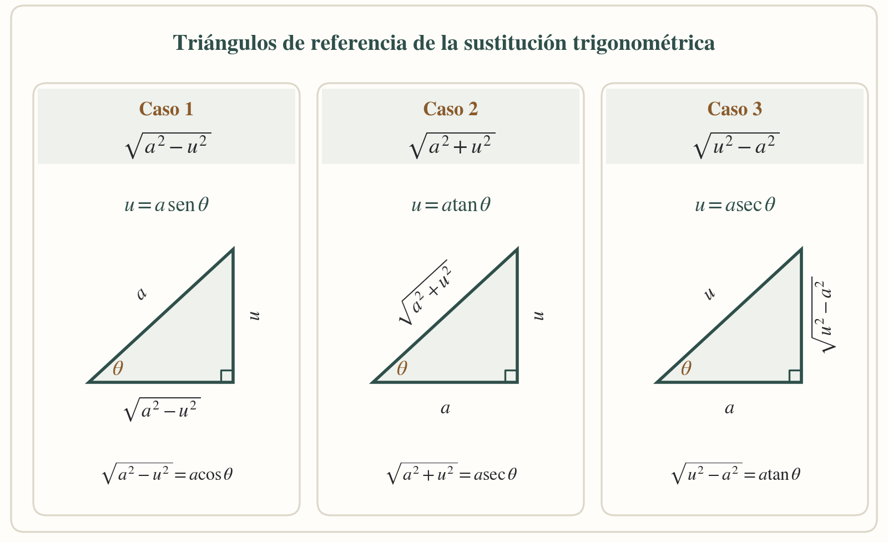
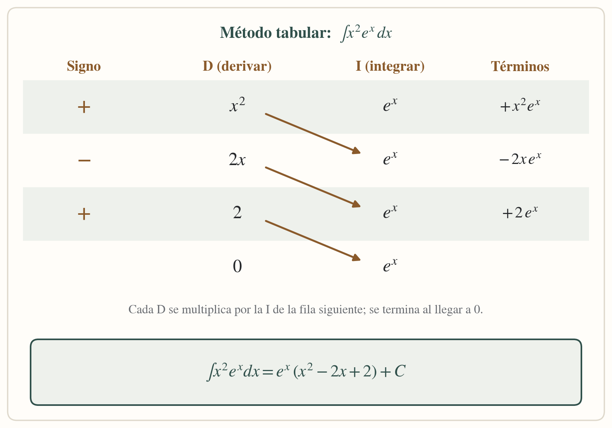
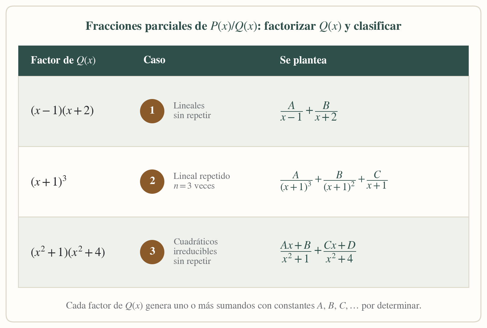

Capítulo 4 · Págs. 48–76 (hasta el Ejercicio 16)
Métodos de integración
Sustitución trigonométrica, integración por partes, fracciones parciales y sustitución por una nueva variable.
Sustitución trigonométrica
Se usa cuando el integrando contiene una raíz de la forma √(a²−u²), √(a²+u²) o √(u²−a²), que no se resuelven por ningún método anterior. El formulario de casos propone, para cada una, una sustitución con seno, tangente o secante que elimina la raíz.

Ejercicio 13 · Sustitución trigonométrica
Ejemplo 1
∫ dx / [x² √(16 − x²)] Caso 1 del formulario
- La expresión es √(a²−u²) con a=4, u=x, así que se propone x = 4 sen θ, dx = 4 cos θ dθ.
- √(16−x²) = √(16−16sen²θ) = 4cos θ.
- Se sustituye: ∫ 4cosθ dθ / [16sen²θ · 4cosθ] = (1/16)∫csc²θ dθ = −(1/16)cot θ.
- Con el triángulo de referencia (cateto opuesto x, hipotenusa 4), cot θ = √(16−x²)/x.
Resultado: −√(16 − x²) / (16x) + C
Ejemplo 2
∫ dx / √(x² + 25) Caso 2 del formulario
- La expresión es √(a²+u²) con a=5, u=x, así que se propone x = 5 tan θ, dx = 5sec²θ dθ.
- √(x²+25) = 5 sec θ.
- ∫ 5sec²θ dθ / (5secθ) = ∫secθ dθ = ln|secθ + tanθ|.
- Con el triángulo (cateto opuesto x, adyacente 5, hipotenusa √(x²+25)): secθ=√(x²+25)/5, tanθ=x/5.
Resultado: ln (x + √(x² + 25)) + C
Ejemplo 3
∫ x² dx / √(x² + 9) Caso 2 del formulario
- Con a=3: x = 3tanθ, dx = 3sec²θ dθ, √(x²+9) = 3secθ.
- ∫ (9tan²θ)(3sec²θ)dθ / (3secθ) = 9∫tan²θ secθ dθ = 9∫(sec³θ − secθ)dθ.
- ∫sec³θ dθ se resuelve por partes (fórmula conocida): (1/2)[secθ tanθ + ln|secθ+tanθ|].
- Se regresa a x con el triángulo del caso 2 y se simplifica.
Resultado: (x/2)√(x² + 9) − (9/2) ln (x + √(x² + 9)) + C
Ejemplo 4
∫ dx / [x² √(x² − 4)] Caso 3 del formulario
- La expresión es √(u²−a²) con a=2, u=x, así que se propone x = 2secθ, dx = 2secθ tanθ dθ.
- √(x²−4) = 2 tanθ.
- ∫ 2secθ tanθ dθ / [4sec²θ · 2tanθ] = (1/4)∫cosθ dθ = (1/4)senθ.
- Con el triángulo (hipotenusa x, adyacente 2, opuesto √(x²−4)): senθ = √(x²−4)/x.
Resultado: √(x² − 4) / (4x) + C
Ejemplo 5
∫ √(x² − 16) / x dx Caso 3 del formulario
- Con a=4: x = 4secθ, dx = 4secθ tanθ dθ, √(x²−16) = 4tanθ.
- ∫ (4tanθ)(4secθ tanθ)dθ / (4secθ) = 4∫tan²θ dθ = 4∫(sec²θ−1)dθ.
- = 4(tanθ − θ).
- Del triángulo: tanθ = √(x²−16)/4 y θ = arcsec(x/4).
Resultado: √(x² − 16) − 4 arcsec(x/4) + C
Integración por partes
Se aplica cuando el integrando es un producto de dos funciones de distinto tipo (polinomio por exponencial, polinomio por trigonométrica, logaritmo, etc.) y no hay una sustitución simple que lo resuelva.
Cada ejemplo se resuelve primero paso a paso con la fórmula de partes y después se muestra según la clasificación por casos (orden LIATE para elegir u, y el método tabular como atajo cuando hay que aplicar partes varias veces).

Ejercicio 14 · Integración por partes
Ejemplo 1
∫ x e²ˣ dx
Explicación paso a paso
- Se elige u = x (se deriva fácil) y dv = e²ˣdx; entonces du = dx, v = e²ˣ/2.
- Se aplica la fórmula: ∫u dv = uv − ∫v du.
- = x·e²ˣ/2 − ∫e²ˣ/2 dx = xe²ˣ/2 − e²ˣ/4.
Según la clasificación de casos (LIATE y método tabular)
- Es el Caso: polinomio × exponencial; por LIATE se deriva el polinomio (u) y se integra la exponencial (dv).
- Se arma la tabla: columna D (derivadas de x): x, 1, 0; columna I (integrales de e²ˣ): e²ˣ/2, e²ˣ/4.
- Se multiplica en diagonal alternando signos + y −, y se detiene cuando D llega a 0: +x·(e²ˣ/2) − 1·(e²ˣ/4).
Resultado: (x/2) e²ˣ − (1/4) e²ˣ + C
Ejemplo 2
∫ x cos x dx
Explicación paso a paso
- u = x, dv = cosx dx; du = dx, v = senx.
- ∫u dv = uv − ∫v du = x senx − ∫senx dx.
Según la clasificación de casos (LIATE y método tabular)
- Es el Caso: polinomio × trigonométrica; u = x (se deriva), dv = cosx dx (se integra).
- Tabla: columna D: x, 1, 0; columna I (integrales de cosx): senx, −cosx.
- Diagonales con signos +, −: +x·senx − 1·(−cosx) = x senx + cosx.
Resultado: x sen x + cos x + C
Ejemplo 3
∫ x² eˣ dx
Explicación paso a paso
- u = x², dv = eˣdx; du = 2x dx, v = eˣ. Primera aplicación: x²eˣ − 2∫xeˣdx.
- La integral restante, ∫xeˣdx, se vuelve a resolver por partes (u=x, dv=eˣdx): xeˣ − eˣ.
- Se sustituye de regreso: x²eˣ − 2(xeˣ − eˣ).
Según la clasificación de casos (LIATE y método tabular)
- Es el Caso: polinomio × exponencial, pero el polinomio es de grado 2, así que la tabla tiene un renglón más que en el Ejemplo 1.
- Tabla: columna D: x², 2x, 2, 0; columna I (integrales repetidas de eˣ): eˣ, eˣ, eˣ.
- Diagonales con signos +,−,+: +x²·eˣ − 2x·eˣ + 2·eˣ (se detiene en D = 0).
Resultado: eˣ(x² − 2x + 2) + C
Ejemplo 4
∫ x sen 3x dx
Explicación paso a paso
- u = x, dv = sen3x dx; du = dx, v = −cos3x/3.
- = −x cos3x/3 + (1/3)∫cos3x dx = −xcos3x/3 + (1/9)sen3x.
Según la clasificación de casos (LIATE y método tabular)
- Caso: polinomio × trigonométrica (igual que el Ejemplo 2, con ángulo múltiple).
- Tabla: columna D: x, 1, 0; columna I (integrales de sen3x): −cos3x/3, −sen3x/9.
- Diagonales +,−: +x·(−cos3x/3) − 1·(−sen3x/9) = −xcos3x/3 + sen3x/9.
Resultado: −(x/3) cos 3x + (1/9) sen 3x + C
Ejemplo 5
∫ ln x dx
Explicación paso a paso
- Se elige u = ln x y dv = dx (el otro factor implícito); du = dx/x, v = x.
- ∫u dv = uv − ∫v du = x ln x − ∫x·(1/x)dx = x ln x − ∫dx.
Según la clasificación de casos (LIATE y método tabular)
- Es el Caso: función logarítmica sola; en LIATE, la logarítmica siempre se elige como u, nunca como dv.
- Aquí no conviene la tabla, porque dv = dx no vuelve a integrarse de forma útil; se resuelve en un solo paso.
- u = ln x (se deriva), dv = dx (se integra): du = dx/x, v = x.
Resultado: x ln x − x + C
Fracciones parciales
Se aplica para integrar una fracción propia P(x)/Q(x). Se factoriza Q(x) y, según el formulario de casos, se descompone la fracción en una suma de fracciones más simples, cuyo denominador es cada factor (o potencia de factor) de Q(x).

Cada ejemplo se resuelve primero de forma intuitiva (planteando A, B, D y despejando) y después se identifica explícitamente con el caso del formulario y su fórmula general.
Ejercicio 15 · Fracciones parciales
Ejemplo 1
∫ (x+1) / [(x−2)(x+3)] dx
Explicación paso a paso
- El integrando es una fracción propia (el numerador tiene menor grado que el denominador) con dos factores lineales distintos.
- Se propone (x+1)/[(x−2)(x+3)] = A/(x−2) + B/(x+3) y se multiplica por el denominador común: x+1 = A(x+3) + B(x−2).
- Con x=2: 3=5A ⇒ A=3/5. Con x=−3: −2=−5B ⇒ B=2/5.
- Se integra cada fracción simple por separado.
Según el formulario (Caso 1: factores lineales, no se repiten)
- Q(x) = (x−2)(x+3) es producto de factores lineales (a₁x+b₁)(a₂x+b₂), ninguno repetido: es el Caso 1 del formulario.
- Fórmula general del Caso 1: P(x)/Q(x) = A₁/(a₁x+b₁) + A₂/(a₂x+b₂).
- Se identifica a₁=1,b₁=−2,a₂=1,b₂=3 y se obtienen A₁=3/5, A₂=2/5, igual que arriba.
Resultado: (3/5) ln|x−2| + (2/5) ln|x+3| + C
Ejemplo 2
∫ dx / [(x−1)(x+2)]
Explicación paso a paso
- 1/[(x−1)(x+2)] = A/(x−1) + B/(x+2).
- 1 = A(x+2) + B(x−1). Con x=1: A=1/3. Con x=−2: B=−1/3.
Según el formulario (Caso 1: factores lineales, no se repiten)
- Igual que el ejemplo anterior, Q(x) es producto de dos factores lineales distintos: Caso 1.
- Se aplica directamente P(x)/Q(x) = A₁/(a₁x+b₁) + A₂/(a₂x+b₂) con P(x)=1, obteniendo A₁=1/3, A₂=−1/3.
Resultado: (1/3) ln|x−1| − (1/3) ln|x+2| + C
Ejemplo 3
∫ dx / [x(x−1)²]
Explicación paso a paso
- El factor (x−1) aparece elevado al cuadrado, así que se propone 1/[x(x−1)²] = A/x + B/(x−1) + D/(x−1)².
- 1 = A(x−1)² + Bx(x−1) + Dx. Con x=0: A=1. Con x=1: D=1.
- Comparando el coeficiente de x²: 0 = A+B ⇒ B=−1.
- Se integra cada término; el de D/(x−1)² da −D/(x−1).
Según el formulario (Caso 2: factor lineal que se repite)
- Q(x) = x(x−1)² tiene el factor (x−1) repetido 2 veces: es el Caso 2 del formulario.
- Fórmula general del Caso 2 para (a₁x+b₁) repetido n veces: A₁/(a₁x+b₁)ⁿ + A₂/(a₁x+b₁)ⁿ⁻¹ + … + Aₙ/(a₁x+b₁), más un término A/x por el factor simple restante.
- Con n=2 y a₁x+b₁=x−1 se obtiene A₁/(x−1)² + A₂/(x−1), que corresponde a D=1 y B=−1 de la columna anterior.
Resultado: ln|x| − ln|x−1| − 1/(x−1) + C
Ejemplo 4
∫ (x+4) / (x+1)² dx
Explicación paso a paso
- (x+4)/(x+1)² = A/(x+1) + B/(x+1)².
- x+4 = A(x+1) + B. Con x=−1: B=3. Comparando coeficientes de x: A=1.
Según el formulario (Caso 2: factor lineal que se repite)
- Q(x) = (x+1)² es un único factor lineal repetido 2 veces: Caso 2 con n=2.
- Fórmula general: A₁/(ax+b)² + A₂/(ax+b). Aquí a=1, b=1, A₁=3 (el término sin dividir) y A₂=1.
Resultado: ln|x+1| − 3/(x+1) + C
Ejemplo 5
∫ x dx / [(x²+1)(x+1)]
Explicación paso a paso
- x/[(x²+1)(x+1)] = (Ax+B)/(x²+1) + D/(x+1).
- x = (Ax+B)(x+1) + D(x²+1). Con x=−1: −1=2D ⇒ D=−1/2.
- Comparando coeficientes de x²: 0=A+D ⇒ A=1/2. Con el término independiente: 0=B+D ⇒ B=1/2.
- El término (x/2+1/2)/(x²+1) se separa en x/(x²+1) (logaritmo) más 1/(x²+1) (arco tangente).
Según el formulario (Caso 3: factor cuadrático irreducible, no se repite)
- Q(x) = (x²+1)(x+1) tiene un factor cuadrático irreducible x²+1 (no tiene raíces reales) que no se repite: es el Caso 3 para ese factor, combinado con un Caso 1 para (x+1).
- Fórmula general del Caso 3: (A₁x+B₁)/(a₁x²+b₁x+c₁), que aquí da (Ax+B)/(x²+1) con A=1/2, B=1/2.
- El factor lineal (x+1) aporta el término D/(x+1) del Caso 1, con D=−1/2, igual que arriba.
Resultado: (1/4) ln(x²+1) + (1/2) arctan x − (1/2) ln|x+1| + C
Sustitución por una nueva variable
Cuando el integrando mezcla potencias fraccionarias de x (como √x y ∛x), se propone una nueva variable t elevada al mínimo común múltiplo de los índices de las raíces, para que todo quede en potencias enteras de t —una integral racional que se resuelve por división o fracciones parciales.
Ejercicio 16 · Sustitución por una nueva variable
Ejemplo 1
∫ dx / (√x + x)
Explicación paso a paso
- Se propone t = √x, por lo que x = t², dx = 2t dt.
- √x + x = t + t² = t(1+t).
- ∫ 2t dt / [t(1+t)] = 2∫dt/(1+t) = 2 ln|1+t|.
Aplicando la fórmula general de sustitución
- El integrando solo tiene la raíz x1/2, así que el índice a igualar es m=2: se propone t = x1/mcm(2) = x1/2.
- Toda la integral queda en potencias enteras de t, que es justo el objetivo de la fórmula general.
- Se regresa a x sustituyendo t = √x en el resultado.
Resultado: 2 ln (√x + 1) + C
Ejemplo 2
∫ √x / (1 + √x) dx
Explicación paso a paso
- Se propone t = √x, x = t², dx = 2t dt.
- ∫ t/(1+t) · 2t dt = 2∫ t²/(1+t) dt; se divide: t²/(1+t) = t − 1 + 1/(1+t).
- 2∫(t − 1 + 1/(1+t))dt = 2[t²/2 − t + ln|1+t|] = t² − 2t + 2ln|1+t|.
Aplicando la fórmula general de sustitución
- De nuevo solo aparece x1/2, así que t = x1/2 convierte la integral en una función racional de t.
- La división de polinomios (t²/(1+t)) es el paso extra que se necesita cuando el grado del numerador iguala o supera al del denominador.
Resultado: x − 2√x + 2 ln (√x + 1) + C
Ejemplo 3
∫ dx / (√x − ∛x)
Explicación paso a paso
- Como aparecen x1/2 y x1/3, se usa el común denominador de los índices: t = x1/6, x = t⁶, dx = 6t⁵dt.
- √x = t³, ∛x = t², por lo que √x − ∛x = t²(t−1).
- ∫ 6t⁵dt / [t²(t−1)] = 6∫t³/(t−1)dt; se divide: t³/(t−1) = t²+t+1+1/(t−1).
- 6∫(t²+t+1+1/(t−1))dt = 6[t³/3+t²/2+t+ln|t−1|] = 2t³+3t²+6t+6ln|t−1|.
Aplicando la fórmula general de sustitución
- Los índices de las raíces son m=2 y n=3; la fórmula general pide t = x1/mcm(m,n) = x1/6.
- Con ese exponente, x1/2 = t³ y x1/3 = t² son ambas potencias enteras de t, por lo que toda la integral se vuelve racional.
- Al final se deshace el cambio con t = x1/6.
Resultado: 2√x + 3∛x + 6x1/6 + 6 ln (x1/6 − 1) + C
Ejemplo 4
∫ dx / (√x + ∛x)
Explicación paso a paso
- Igual que el anterior, se usa t = x1/6: √x = t³, ∛x = t².
- √x + ∛x = t²(t+1).
- 6∫t³dt/[t²(t+1)] = 6∫t/(t+1)·t dt… se divide t³/(t+1) = t²−t+1−1/(t+1).
- 6∫(t²−t+1−1/(t+1))dt = 2t³−3t²+6t−6ln|t+1|.
Aplicando la fórmula general de sustitución
- Mismos índices m=2, n=3 que el Ejemplo 3, así que la fórmula pide el mismo cambio t = x1/6.
- Solo cambia el signo en el denominador original, lo que cambia el signo de las fracciones al dividir, pero el procedimiento es idéntico.
Resultado: 2√x − 3∛x + 6x1/6 − 6 ln (x1/6 + 1) + C
Ejemplo 5
∫ dx / (1 + ∛x)
Explicación paso a paso
- Se propone t = x1/3, x = t³, dx = 3t²dt.
- ∫ 3t²dt / (1+t); se divide: 3t²/(1+t) = 3t − 3 + 3/(1+t).
- ∫(3t−3+3/(1+t))dt = (3/2)t² − 3t + 3ln|1+t|.
Aplicando la fórmula general de sustitución
- Aquí solo aparece el índice 3 (la raíz cúbica), así que t = x1/3 es directamente la fórmula general con un único índice.
- No hace falta mínimo común múltiplo porque no hay una segunda raíz con índice distinto.
Resultado: (3/2) x2/3 − 3x1/3 + 3 ln (x1/3 + 1) + C